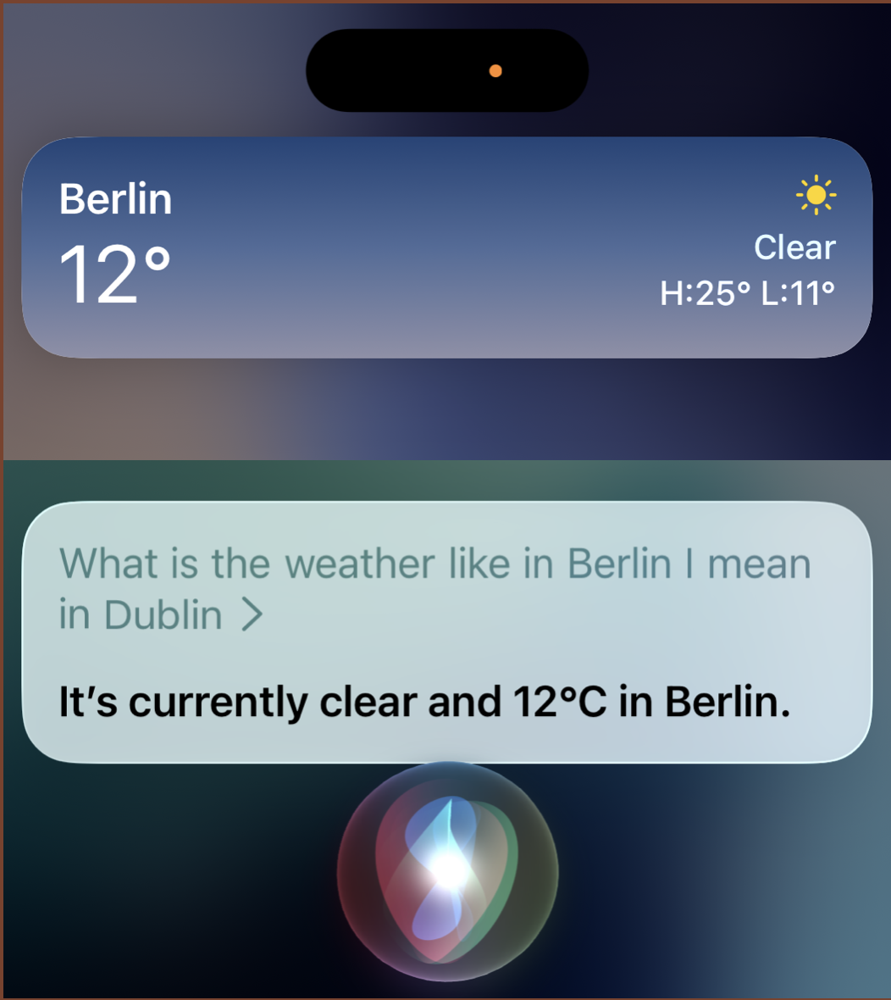
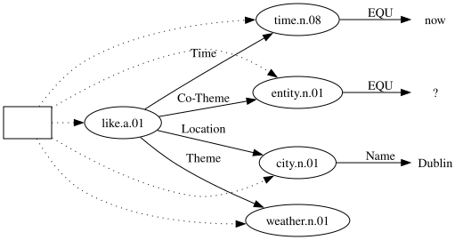
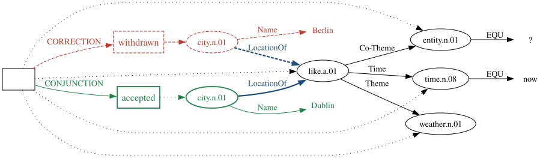
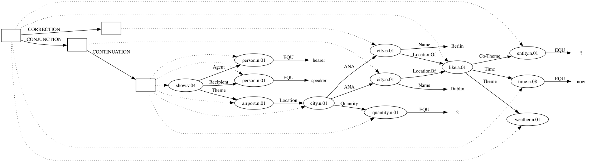
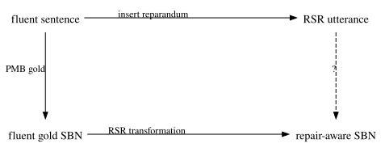
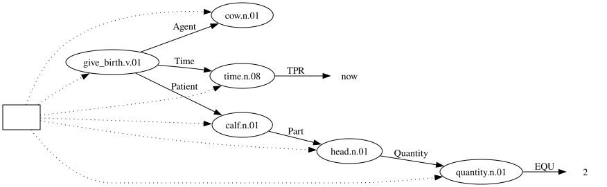
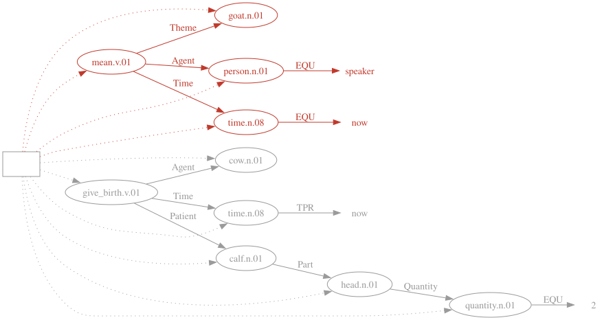
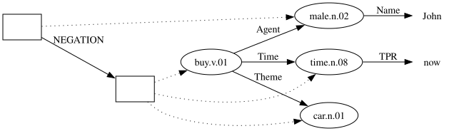
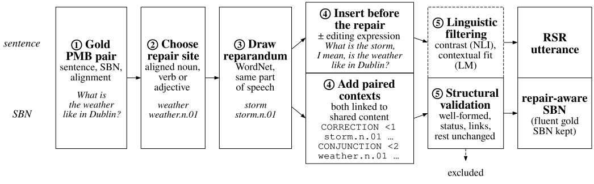
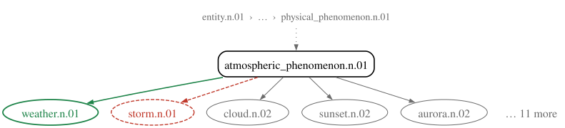

Erasmus Mundus Joint Master Degree in LCT

The speaker replaces Berlin with Dublin, but Siri returns the weather for Berlin. This is a replacement self-repair (RSR) (Shriberg 1994).
Full-Duplex-Bench-v3 tests six spoken agents on real disfluent speech that requires API calls (Lin et al. 2026).
| The user says | The system fills in | The user wants | |
|---|---|---|---|
| Siri | Berlin, I mean, Dublin | location = Berlin | Dublin |
| Gemini Live 3.1 | Rome, corrected to Milan | destination = Rome | Milan |
On self-corrections, the best system passes 58.8% of scenarios (GPT-Realtime) and the weakest 17.6%.
Related Work → Pilot → Representation (RQ1) → Data → Experiment Design (RQ2)
What is the weather like [in Berlin]reparandum, [I mean]editing expression, [in Dublin]repair?
This project covers replacements within a single clause (Levelt 1983; Shriberg 1994).
The reparandum and the editing expression are removed, and the fluent text is passed on (Johnson and Charniak 2004).
→ What is the weather like in Dublin?
The words are kept, and disfluent spans or tokens are labelled (Zayats et al. 2014; Futami et al. 2023).
→ What is the weather like in Berlin in Dublin?
Both approaches serve the same goal: recovering the speaker’s final intention.
What is the weather like in Berlin, I mean, in Dublin? Show me the airports of these two cities.
Psycholinguistic and dialogue studies show that the reparandum stays in the context (Lau and Ferreira 2005; Purver et al. 2018).
All three concern what the utterance means, not which words were spoken.
What is the weather like in Dublin?

Such a graph has room for all three pieces of information: two city nodes, a context for each, and one Location role. Because the structure is explicit, an output can be checked piece by piece.
What is the weather like in Dublin?
entity.n.01 EQU ? % What
time.n.08 EQU now % is
weather.n.01 % the weather
like.a.01 Co-Theme -3 Time -2 Theme -1 Location +1 % like
city.n.01 Name "Dublin" % in Dublin?Each line introduces a concept. A role points to another concept by relative position: -1 is the previous concept, +1 the next.
Simplified Box Notation (SBN) is the format of the Parallel Meaning Bank (PMB 5.1.0), which provides gold sentence–SBN pairs (Abzianidze et al. 2017; Bos 2023). Semantic parsing then becomes text-to-text: sentence in, SBN out.
| Fluent (PMB) | RSR, no editing expression | RSR + I mean |
|---|---|---|
| A cow gave birth to a calf with two heads. | A goat, a cow gave birth to a calf with two heads. | A goat, I mean, a cow gave birth to a calf with two heads. |
| Input | Scorable (%) | Failure-penalised F1 |
|---|---|---|
| Fluent | 97.5 | 0.950 |
| RSR, no editing expression | 94.6 | 0.786 |
| RSR + I mean | 76.5 | 0.609 |
Scorable: the output converts into a graph. F1: SMATCH++ (Opitz 2023), unscorable outputs counted as 0.
What is the weather like in Berlin, I mean, in Dublin?

| Both candidates | Their status | The role they compete for |
|---|---|---|
two city nodes |
a withdrawn and an accepted context | both are LocationOf the request |
Show me the airports of these two cities.

These two cities links to both Berlin and Dublin (ANA), but Berlin does not become the requested location again.
Berlin stays accessible because proper names project out of the withdrawn context (Bos 2021). The later-reference test set only uses referents that can project in this way.
| Representable | Replacement of a concept or a role, also inside a context such as negation |
| Implemented in the corpus | Replacement of a single noun, verb or adjective concept |
| Outside the design | Replacement of a separator (e.g. must → might, when → even though); delayed repair |
The PMB has fluent sentence–SBN pairs; disfluency corpora have self-repairs but no SBN (Deshmukh et al. 1998; Passali et al. 2022; Gupta et al. 2021).

Each item keeps the PMB split of its source document, so no training document reappears in evaluation.
| Step | Sentence side | SBN side |
|---|---|---|
| ① Start from a gold PMB pair | What is the weather like in Dublin? | the SBN shown earlier |
| ② Pick a noun, verb or adjective that a word expresses | weather |
weather.n.01
|
| ③ Draw a WordNet sibling: same kind of thing, different value | storm |
storm.n.01
|
Other siblings of weather in the pool: cloud, sunset, aurora, halo, … Synonyms are never drawn, because the pool takes siblings only.
What is the weather like in Dublin? → What is the storm, I mean, the weather like in Dublin?
entity.n.01 EQU ? % What
time.n.08 EQU now % is
entity.n.01 % both fill this slot
CORRECTION <1 % withdrawn:
storm.n.01 EQU -1 % the storm
CONJUNCTION <2 % accepted (I mean):
weather.n.01 EQU -2 % the weather
like.a.01 Co-Theme -5 Time -4 Theme -3 Location +1 % like
city.n.01 Name "Dublin" % in Dublin?The same structure as Berlin and Dublin: a withdrawn context, an accepted context, one shared role (the Theme of like).
| Check | Rejects | Rejected example |
|---|---|---|
| Structure | ill-formed graph, wrong status, a missing link, any change outside the repair | — |
| Contextual fit: LM surprisal of the reparandum given its left context | a reparandum nobody would say | cake → carburettor, for his wedding |
The contextual-fit threshold is set on 150 hand-labelled candidates and frozen before the corpus is filtered.
| PMB training partition (9,552 documents) | Count | % |
|---|---|---|
| Nouns, verbs and adjectives in the gold SBNs | 23,232 | 100.0 |
| … expressed by a word in the sentence | 17,886 | 77.0 |
| … with a WordNet competitor | 16,481 | 70.9 |
| … giving a well-formed repair-aware graph | 16,425 | 70.7 |
The transformation succeeds at 99.7% of the sites where a competitor exists. These sites are the candidate pool before linguistic filtering and sampling; the sampling rule is fixed before training.
Training input: What is the storm, I mean, the weather like in Dublin?
| Condition | Role | Target for this input | Answers |
|---|---|---|---|
| Fluent only | reference: the pilot parser | — (never sees RSR input) | how far a parser gets without RSR training |
| RSR normalisation | baseline: deletion | the fluent SBN: weather only | what keeping the reparandum buys and costs |
| Repair-aware | this project | storm withdrawn, weather accepted | RQ2: can the representation be learned? |
The controlled comparison is between the baseline and repair-aware conditions: they share inputs, example counts and training, and only the target differs.
Qwen3.5 at 2B, 9B and 27B (Qwen Team 2026) is fine-tuned with LoRA under all three conditions, with three seeds each (27 runs). One parsing instruction serves all conditions and does not say whether an input contains a repair.
Test input: What is the storm, I mean, the weather like in Dublin?
| Output | Typical of | SMATCH++ |
|---|---|---|
| storm dropped | baseline | 0.67 |
| storm asserted as well | reference | 0.68 |
| storm withdrawn, weather accepted | repair-aware | 1.00 |
The first two outputs are wrong in opposite ways: one loses the storm, the other asserts it. Yet their scores are almost the same, just as the pilot’s goat parse still scored 0.764.
Constructed outputs, scored against the repair-aware gold graph with the project’s evaluator.
| Output | SMATCH++ | RSR-structure accuracy | Accepted meaning |
|---|---|---|---|
| storm dropped | 0.67 | ✗ | 1.00 |
| storm asserted as well | 0.68 | ✗ | 0.95 |
| storm withdrawn, weather accepted | 1.00 | ✓ | 1.00 |
| Possible shortcut | Test | Example |
|---|---|---|
| The editing expression triggers the structure | Each test item with and without one; sorry never appears in training | What is the storm, sorry, the weather like in Dublin? |
| Any two adjacent words of the same kind trigger it | Lists, appositions and coordination without replacement | We flew to Berlin, Dublin and Paris. (no repair) |
| The structure is applied beyond one clause | Corrections across turns | A: Is it Berlin? B: No, Dublin. |
About 30% of repair training inputs carry I mean, no, no wait or actually; the rest carry none.
| Related Work | Deletion loses Berlin; tagging keeps it but not its status or its role. |
| Pilot | A parser trained on fluent SBN often asserts the reparandum, and SMATCH++ hides the error. |
| Representation | A withdrawn and an accepted context (CORRECTION, CONJUNCTION) record both candidates, their status and the role they compete for. |
| Data | Editing PMB pairs on both sides yields 16,425 candidate sites; the transformation succeeds at 99.7% of them. |
| Experiment Design (planned) | Three conditions at three model sizes test whether the structure is learnable, and what keeping the reparandum buys and costs. |
Back to Siri: a parser that produces this representation queries the weather in Dublin, and can still resolve these two cities to Berlin and Dublin.
| MR use | Study |
|---|---|
| Detect unsupported relations in generated database queries | Regan et al. (2024) |
| Evaluate the contextual appropriateness of dialogue responses | B. Yang et al. (2025) |
| Construct paraphrase-resistant semantic watermarks | Ye et al. (2026) |
The base Gemma-2 9B, without the adapter, was asked to mark the reparandum, the editing expression and the repair in plain text.
| Input | RSR detected (%) |
|---|---|
| Fluent (false alarm) | 1.0 |
| RSR, no editing expression | 44.8 |
| RSR + I mean | 100.0 |
With I mean, the base model notices every repair, yet the fine-tuned parser often represents I mean as content. Without it, the base model misses more than half.
A goat, I mean, a cow gave birth to a calf with two heads.
Fluent reference

Parse of the RSR input

Most of the graph matches the reference, so the parse still scores 0.764 SMATCH++. Nothing in it records that the cow replaces the goat.
A goat, I mean, a cow gave birth to a calf with two heads.
Fluent reference
cow.n.01 % cow
give_birth.v.01 Agent -1 Time +1 Patient +2 % gave birth
time.n.08 TPR now
calf.n.01 Part +2 % calf
quantity.n.01 EQU 2 % two
head.n.01 Quantity -1 % headsParse of the RSR input
goat.n.01 % goat
person.n.01 EQU speaker % I
mean.v.01 Theme -2 Agent -1 Time +1 % mean
time.n.08 EQU now
cow.n.01 % cow
give_birth.v.01 Agent -1 Time +1 Patient +2 % gave birth
time.n.08 TPR now
calf.n.01 Part +2 % calf
quantity.n.01 EQU 2 % two
head.n.01 Quantity -1 % heads| Both candidates | Their status | The role they compete for | |
|---|---|---|---|
| Deletion | ✗ | — | — |
| Tagged transcription | ✓ | ✓ (on words) | ✗ |
| Parser trained on fluent SBN (pilot) | ✓a | ✗ | ✗ |
| This project | ✓ | ✓ (in the meaning) | ✓ |
a 90.1% of scorable outputs contain more concepts than the fluent parse; the reparandum is often kept as asserted content.
John did not buy a car.
male.n.02 Name "John" % John
NEGATION <1 % did not
time.n.08 TPR now
buy.v.01 Agent -2 Time -1 Theme +1 % buy
car.n.01 % a car
NEGATION opens a new context: the buying event and the car are represented, but their content is denied.CORRECTION holds the withdrawn candidate, CONJUNCTION the accepted oneentity.n.01 EQU ? % What
time.n.08 EQU now % is
weather.n.01 % the weather
like.a.01 Co-Theme -3 Time -2 Theme -1 % like
CORRECTION <1
city.n.01 Name "Berlin" LocationOf -1 % in Berlin
CONJUNCTION <2 % I mean,
city.n.01 Name "Dublin" LocationOf -2 % in Dublin?CORRECTION opens the context for Berlin. Following SDRT’s Correction relation, its content is withdrawn: ¬Kπ1 ∧ Kπ2 (Lascarides and Asher 2009).CONJUNCTION opens the context for Dublin and merges it back into the shared request.LocationOf, so the revised role is recorded.\[ K = K_{\pi_{\text{pre}}} \land \neg K_{\pi_m} \land \big(K_{\pi_n} \land K_{\pi_{\text{post}}}\big) \land \varphi_{\mathit{Corr}(\pi_m,\pi_n)} \]
where: \(K_{\pi_m}\) represents the reparandum \(K_{\pi_n}\) represents the repair \(K_{\pi_{\text{post}}}\) represents the continuation after the repair
Why SBN rather than AMR (Banarescu et al. 2013) or DS-TTR (Hough and Purver 2012): AMR lacks separate semantic contexts and does not record the order of the replacement; DS-TTR keeps the withdrawn path only in its processing history. SBN separates contexts, and the PMB supplies sentence–SBN pairs.

Running example: the Siri request. The reparandum and the SBN splice are the generator’s output for this sentence. Dashed: in progress.
# PMB source
doc_id: p42/d1468
split: train
nl_clean: Let's sit in the shade.
sbn_clean: >
time.n.08 TSU now person.n.01 EQU speaker
sit.v.01 Time -2 Theme -1 Location +1 shade.n.01
# Repair selection and transformation
# the third concept in the sequence, counted from zero
concept_pos: 2
repair_synset: sit.v.01
reparandum_synset: stand.v.01
reparandum_surface: stand
strategy: inplace
devices: d1_drop_role
blockers: —
# the largest role index without its sign; the ceiling is nine
max_abs_index: 3
# Generated pair
nl_repair: Let's stand, sit in the shade.
nl_repair_interr: Let's stand, I mean, sit in the shade.
sbn_repair: >
time.n.08 TSU now person.n.01 EQU speaker
CORRECTION <1 stand.v.01 Time -2 Theme -1
CONJUNCTION <2 sit.v.01 Time -3 Theme -2 Location +1 shade.n.01
# Validation (NLI scores are archived, not used for filtering)
# 1 = well-formed graph; items with 0 are dropped
legal: 1
entail_fwd: 0.0005
entail_bwd: 0.0005
synonymy: 0.0005
For a noun, the generator goes one step up from the repair concept and takes the parent’s other children as candidates. This is how storm is found for weather, together with cloud, sunset and the rest.
Verbs and adjectives follow the same idea by other routes: VerbNet class-mates for verbs, FrameNet frame-mates and antonyms for adjectives. In each case the candidate fills the same slot with a different value.
similar_to clusters, verb groups) are never used, and a candidate that shares a lemma with the repair is dropped. Couch → sofa cannot occur: couch and sofa are lemmas of one synset.entity.n.01, both candidates EQU it| Question | Comparison | Measure | Test data |
|---|---|---|---|
| Can the representation be learned? | repair-aware, absolute | RSR-structure accuracy, error types | generated RSR test items |
| What does keeping the reparandum buy? | normalisation vs repair-aware | links to the withdrawn referent | later-reference challenge set |
| What does it cost? | normalisation vs repair-aware | accepted meaning | generated RSR test items |
| all conditions | SMATCH++, spurious-RSR rate | unmodified PMB test set |
RSR-structure accuracy, the primary measure, is read in absolute terms: the repair-aware parser is expected to lead the other conditions on it, since only it is trained on that structure.
Errors are classified as missing configuration, reversed status, wrong link to shared content, reparandum left in accepted content, editing expression represented as content, spurious RSR, or malformed SBN.